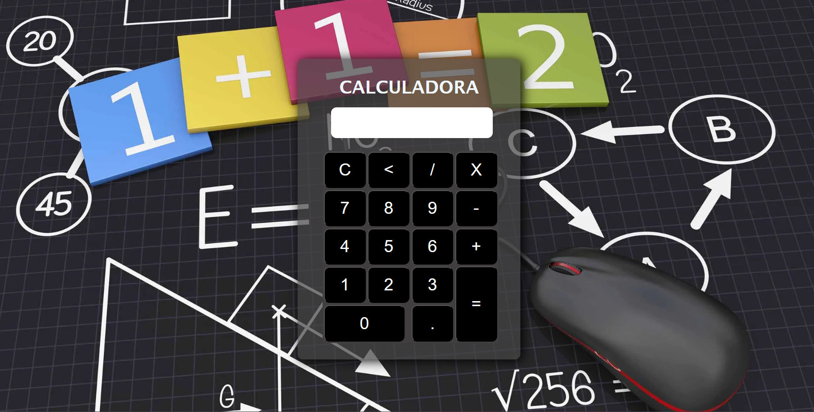
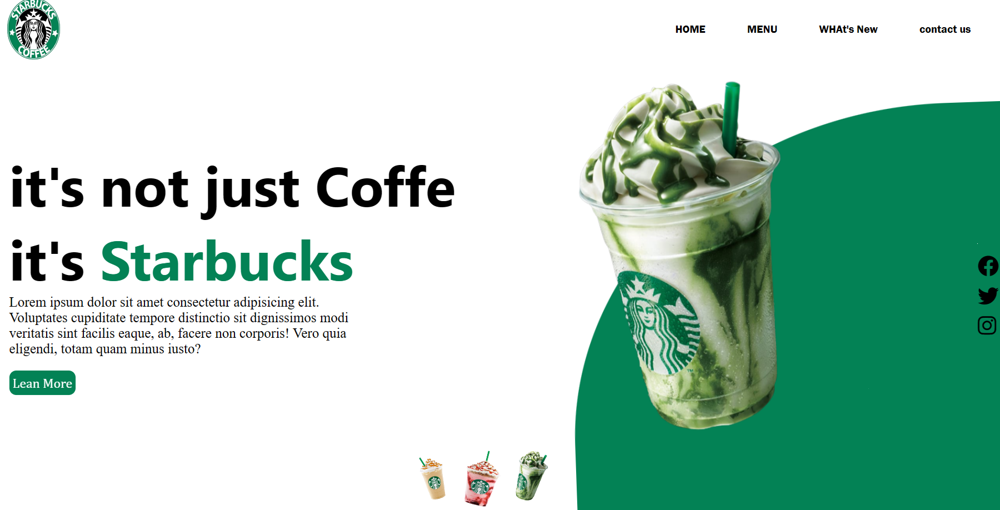
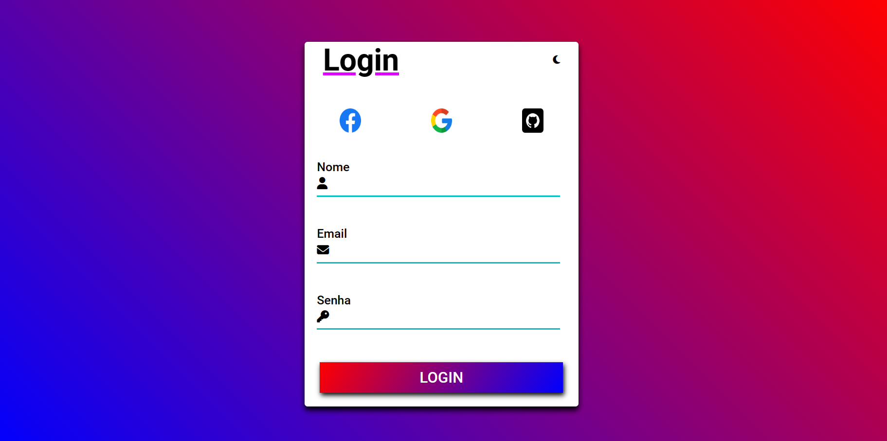

Calculadora
Fiz esse projeto pra praticar mas meu raciocinio no JS como a maioria dos projetos a seguir
Tecnologias usadas no projeto: HTML,CSS E JAVASCRIPT
Visualizar
Pagina de Starbucks
Esse projeto estava praticando o posicionamento de objetos.
Tecnologias usadas no projeto: HTML E CSS
Visualizar
SLIDE
esse projeto foi bem dificil de fazer mas conseguir um mini slider
Tecnologias usadas no projeto: HTML,CSS E JAVASCRIPT
Visualizar
Pagina de Login
Fiz essa pagina de login pra praticar o flexbox e um pouco de js pra fazer o modo dark
Tecnologias usadas no projeto: HTML,CSS E JAVASCRIPT
Visualizar
Relógio Digital

esse projeto foi bem basico, so pra praticar uns conceitos de JS sobre data e hora
Tecnologias usadas no projeto: HTML,CSS E JAVASCRIPT
Visualizar